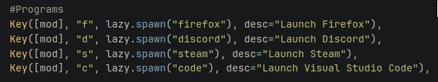
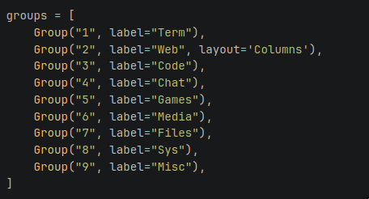
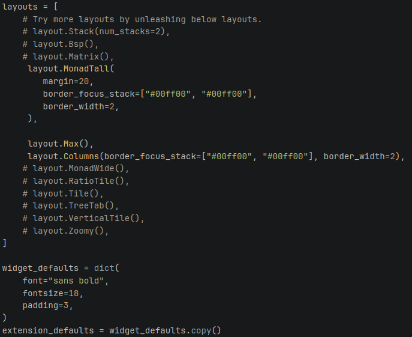
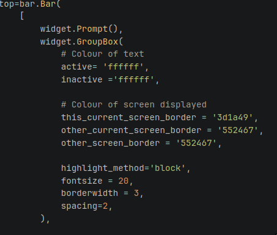
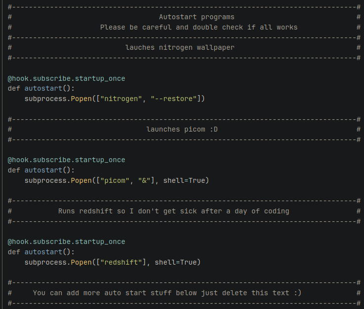
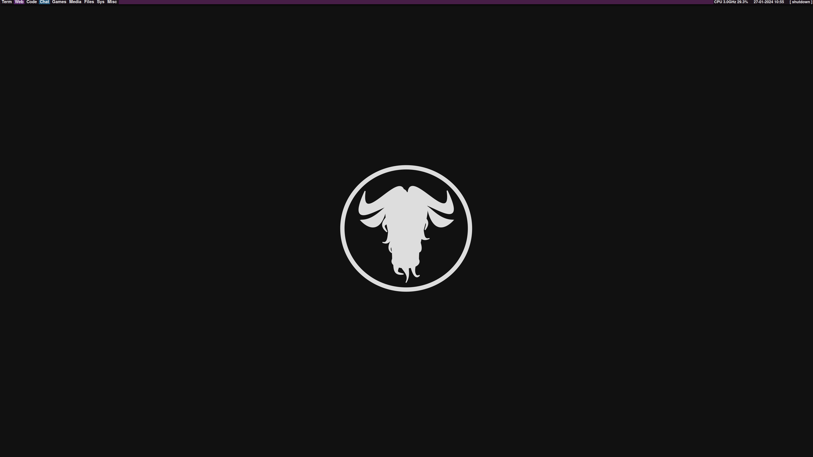

There is not much to say about my Qtile config but I have modified it to my liking in a few ways.
Shortcuts
I have added three custom shortcuts so I can launch Discord, Firefox, Steam, and code using this command.

This tells Qtile that if I press mod4+x (mod4 is the Windows key), it will launch whatever app I have bound to it, for example
f for Firefox and such. Overtime I will probably add more apps to this list because it is so much faster than scanning for the
applocation name in the run menu, and it has increased my work flow by a lot.
Groups
I have assigned groups their own names so I can stay more organized. It also just looks better than numbers, in my opinion.
I am thinking of changing the group names and the order they are in to fit my work flow better, but for now I will just
stick with it because it is working as intended, but in the future I will probably change it up a little bit.
Layouts/widget defaults
Here are my layouts that I have chosen and configured to what is best for me.

I have chosen the MonadTall layout as my primary layout because I have a large primary monitor and I personally like
the spaces that MonadTall provides, and it is more stylish. But I still have max and colums enabled, just in case I need them.
I want to use them; I mainly use them on my second monitor. Also, due to me having a bigger monitor, I have chosen
a larger font in bold so I am able to see it.
This is why MonadTall looks like on my main monitor

Widgets
Status bar
I am going to go through my widgets now. If one is not mentioned that is because it has default settings.

I have put my status bar at the top of my screen because it is easier to see than at the bottom (in my opinion).
I have also changed the colours of the windows that I am currently on, and I have changed it from a box selection
to a block selection so that it is more noticeable, and for Styal, I have also changed the active and inactive windows
to the same colour because I do not personally want them to be different. I think they look good as just white throughout.
Background colour
The background colour for my status bar is #1d141d. A very dark purple. I chose this because it matches my aesthetic.
The only widget to differentiate this colour standard is the 'widget.windowname' because there needs to be some variation in my status bar.
Clock
I have changed the date format and the time format to day, month, year, and 24 hour time. widget.Clock(format="%d-%m-%Y %H:%M",), This is how I achieved that.
Start-up programmes
I have a few startup programs. I have Nitrogen, so I can have a wallpaper on startup instead of manually setting it every single time
I also have Picom for my composer; I only have it so I can see through terminals because they just feel and look better
And my last startup programme is Redshift. I have this because it is easier on my eyes if I am using the computer for a long time.

Here is what my desktop currently looks like

For it to work you will need psutil, it is avaliable in most package managers.
Here is my config file